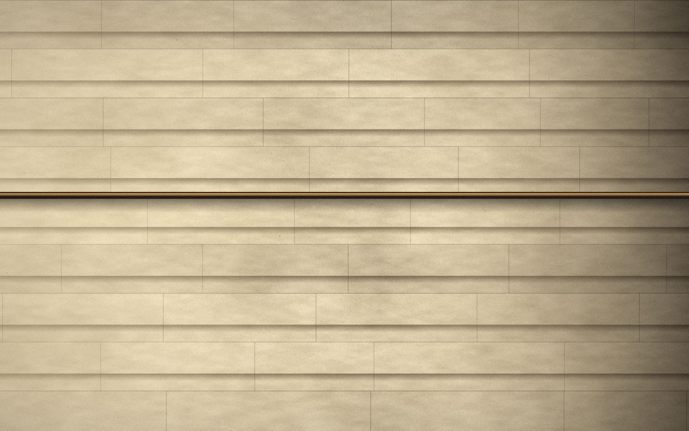
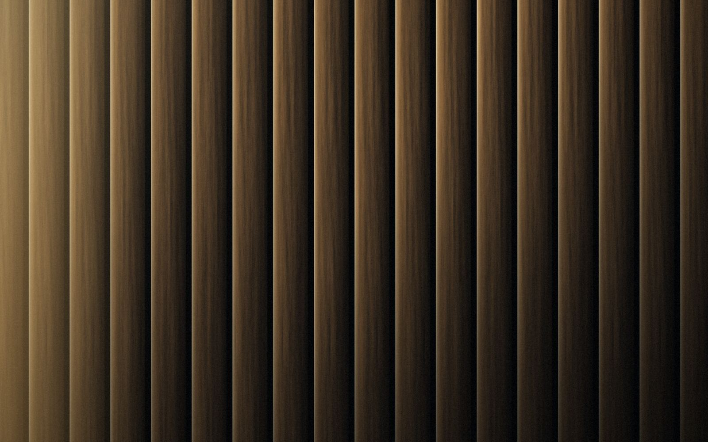
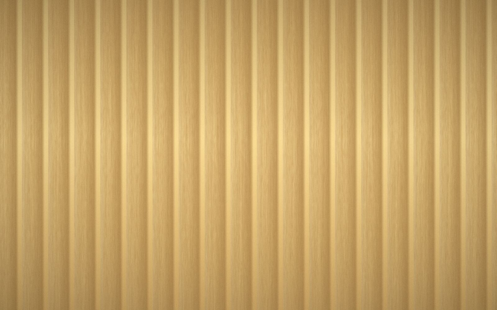
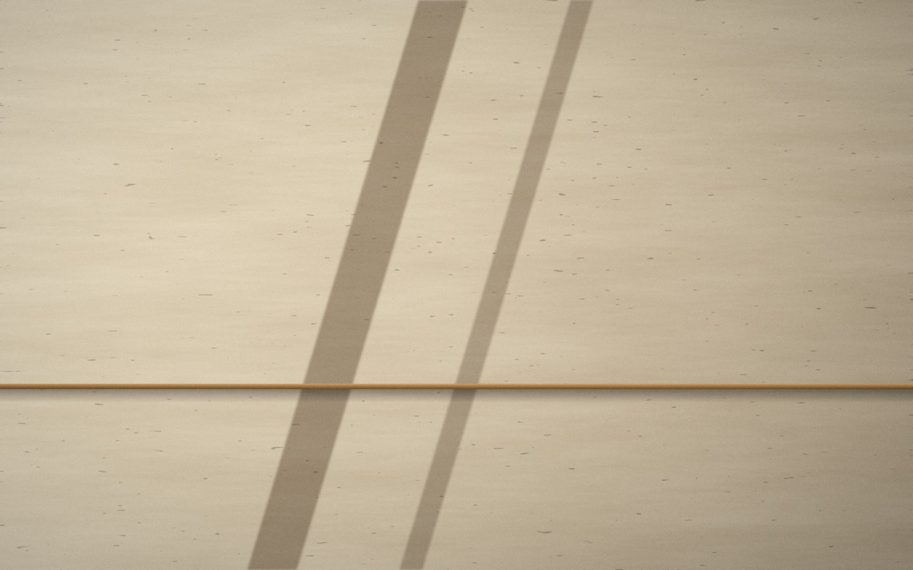
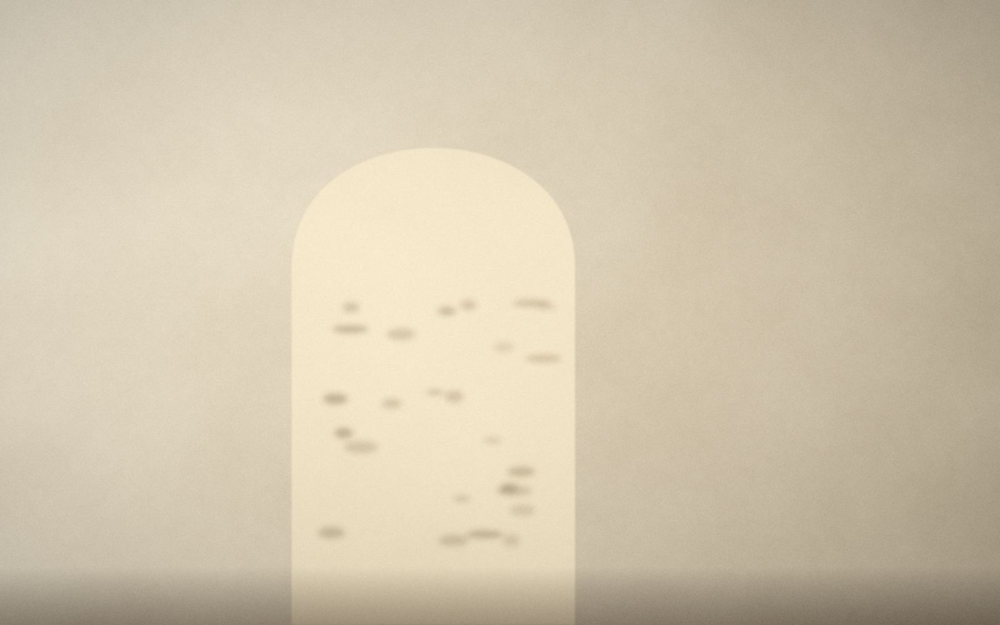

Architecture
Mass before ornament.
We draw the section first. Everything a building will ever be is decided in the thickness of a wall and the height of a room.
A home should be able to be repaired, not replaced. So we build in materials that age with dignity, and in details that a good craftsperson can reach.
Principles
Three convictions.
Mass before ornament
Proportion does the work that decoration usually pretends to do. A wall of the right thickness needs nothing added to it.
Material before finish
Stone is stone through its whole depth. Bronze is cast, not plated. What you touch is what the building is made of.
Light as the brief
Every plan begins with the path of the sun and the longest view. Rooms are shaped to receive light, then furnished.
The section
Drawn from the inside.
A schematic section through a Mason & Rowe tower: a stone base for arrival and wellness, tall residences with deep reveals, planted terraces at each setback, and a lantern of glass at the crown.
Materials
A short, honest palette.

Limestone
Facade · floors
Cast bronze
Frames · hardware
White oak
Floors · joinery
Travertine
Kitchens · baths
Lime plaster
Walls · ceilingsCraft
From quarry to key.
Selected
Stone is chosen block by block, at the face, for color and consistency.
Cut
Each course is cut to the elevation drawing and numbered for its place.
Set
Masons set every piece by hand, in sequence, with mortar joints left tight.
Finished
Bronze, oak and plaster follow. Every residence is walked, tested and signed.
Collaborators
Lindqvist Aoki · Marlowe & Fuentes · Okafor Reyes · Hale + Orsini · Studio Ketteridge · Verdane Landscape
Fictional studios, named for concept purposes.